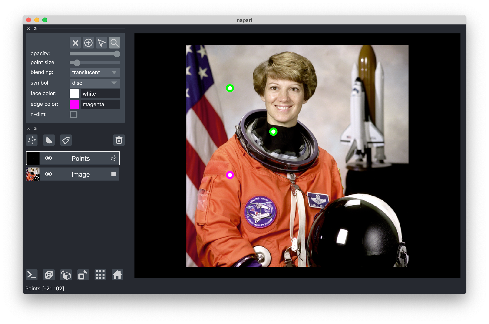

points layer tutorial¶
Welcome to the tutorial on the napari Points layer!
This tutorial assumes you have already installed napari, know how to launch the viewer, and are familiar with its layout. For help with installation see our installation tutorial. For help getting started with the viewer see our getting started tutorial. For help understanding the organisation of the viewer, including things like the layers list, the layer properties widgets, the layer control panels, and the dimension sliders see our napari viewer tutorial.
This tutorial will teach you about the napari Points layer,
including displays spots over an image that have been found in an automated fashion,
or manually annotating an image with points.
At the end of the tutorial you should understand how to add a points layer
and edit it from the GUI and from the console.
The points layer allows you to display an NxD array of N points in D coordinates. You can adjust the size, face color, and edge color of all the points independently. You can also adjust the opactiy, edge width, and symbol representing all the points simultaneously.
Each data point can have annotations associated with it using the Points.properties dictionary.
These properties can be used to set the face and edge colors of the points.
For example, when displaying points of different classes/types,
one could automatically set color the individual points by their respective class/type.
For more details on point properties,
see the “setting point edge and face color with properties” below
or the point annotation tutorial.
a simple example¶
You can create a new viewer and add a set of points in one go using the napari.view_points method,
or if you already have an existing viewer,
you can add points to it using viewer.add_points.
The api of both methods is the same.
In these examples we’ll mainly use add_points to overlay points onto on an existing image.
In this example of we will overlay some points on the image of an astronaut:
from skimage import data
import napari
viewer = napari.view_image(data.astronaut(), rgb=True)
points = np.array([[100, 100], [200, 200], [300, 100]])
viewer.add_points(points, size=30)

arguments of view_points and add_points¶
Both view_points and add_points have the following doc strings:
"""
Parameters
----------
data : array (N, D)
Coordinates for N points in D dimensions.
properties : dict {str: array (N,)}, DataFrame
Properties for each point. Each property should be an array of length N,
where N is the number of points.
symbol : str
Symbol to be used for the point markers. Must be one of the
following: arrow, clobber, cross, diamond, disc, hbar, ring,
square, star, tailed_arrow, triangle_down, triangle_up, vbar, x.
size : float, array
Size of the point marker. If given as a scalar, all points are made
the same size. If given as an array, size must be the same
broadcastable to the same shape as the data.
edge_width : float
Width of the symbol edge in pixels.
edge_color : str, array-like
Color of the point marker border. Numeric color values should be RGB(A).
edge_color_cycle : np.ndarray, list
Cycle of colors (provided as string name, RGB, or RGBA) to map to edge_color if a
categorical attribute is used color the vectors.
edge_colormap : str, vispy.color.colormap.Colormap
Colormap to set edge_color if a continuous attribute is used to set face_color.
See vispy docs for details: http://vispy.org/color.html#vispy.color.Colormap
edge_contrast_limits : None, (float, float)
clims for mapping the property to a color map. These are the min and max value
of the specified property that are mapped to 0 and 1, respectively.
The default value is None. If set the none, the clims will be set to
(property.min(), property.max())
face_color : str, array-like
Color of the point marker body. Numeric color values should be RGB(A).
face_color_cycle : np.ndarray, list
Cycle of colors (provided as string name, RGB, or RGBA) to map to face_color if a
categorical attribute is used color the vectors.
face_colormap : str, vispy.color.colormap.Colormap
Colormap to set face_color if a continuous attribute is used to set face_color.
See vispy docs for details: http://vispy.org/color.html#vispy.color.Colormap
face_contrast_limits : None, (float, float)
clims for mapping the property to a color map. These are the min and max value
of the specified property that are mapped to 0 and 1, respectively.
The default value is None. If set the none, the clims will be set to
(property.min(), property.max())
n_dimensional : bool
If True, renders points not just in central plane but also in all
n-dimensions according to specified point marker size.
name : str
Name of the layer.
metadata : dict
Layer metadata.
scale : tuple of float
Scale factors for the layer.
translate : tuple of float
Translation values for the layer.
opacity : float
Opacity of the layer visual, between 0.0 and 1.0.
blending : str
One of a list of preset blending modes that determines how RGB and
alpha values of the layer visual get mixed. Allowed values are
{'opaque', 'translucent', and 'additive'}.
visible : bool
Whether the layer visual is currently being displayed.
Returns
-------
layer : napari.layers.Points
The newly-created points layer.
"""
points data¶
The input data to the points layer must be an NxD numpy array
containing the coordinates of N points in D dimensions.
The ordering of these dimensions is the same as the ordering of the dimensions for image layers.
This array is always accessible through the layer.data property
and will grow or shrink as new points are either added or deleted.
using the points properties dictionary¶
The Points layer can contain properties that annotate each point.
Points.properties stores the properties in a dictionary
where each key is the name of the property
and the values are numpy arrays with a value for each point (i.e., length N for N points in Points.data).
As we will see below, we can use the values in a property to set the display properties of the points (e.g., face color or edge color).
To see the points properties in action,
please see the point annotation tutorial.
creating a new points layer¶
As you can add new points to a points layer using the add points tool, it is possible to create a brand new empty points layers by clicking the new points layer button above the layers list. The shape of the points layer is defined by the points inside it, and so as you add new points the shape will adjust as needed. The dimension of the new points layer will default to the largest dimension of any layer currently in the viewer, or to 2 if no other layers are present in the viewer.
non-editable mode¶
If you want to disable editing of the points layer
you can set the editable property of the layer to False.
As note in the section on 3D rendering, when using 3D rendering the points layer is not editable.
3D rendering of points¶
All our layers can be rendered in both 2D and 3D mode, and one of our viewer buttons can toggle between each mode. The number of dimensions sliders will be 2 or 3 less than the total number of dimensions of the layer. See for example these points overlaid on an image in both 2D and 3D:

Note though that when entering 3D rendering mode the point add, delete, and select tools are all disabled. Those options are only supported when viewing a layer using 2D rendering.
pan and zoom mode¶
The default mode of the points layer is to support panning and zooming, as in the image layer.
This mode is represented by the magnifying glass in the layers control panel,
and while it is selected editing the layer is not possible.
Continue reading to learn how to use some of the editing modes.
You can always return to pan and zoom mode by pressing the Z key when the points layer is selected.
adding, deleting, and selecting points¶
New points can be added using the point adding tool.
This tool can be selected from layer controls panel.
Points can then be added by clicking in the canvas.
If you have a multidimensional points layer
then the coordinates of the new point will keep track of the currently viewed slice that you added the point too.
You can quickly select the add points tool by pressing the P key when the points layer is selected.
The point adding tool also supports panning and zooming.
You can select a point by selecting the select points tool and then clicking on that point.
You can select multiple points by continuing to shift click on additional points,
or by dragging a bounding box around the points you want to select.
You can quickly select the select points tool by pressing the S key when the points layer is selected.
You can select all the points in the currently viewed slice by clicking the A key if you are in select mode.
Once selected you can delete the selected points by clicking on the delete button in the layer controls panel or pressing the delete key.
When using the point selection tool the pan and zoom functionality of the viewer canvas is disabled and you are able to select points the layer. You can temporarily re-enable pan and zoom by pressing and holding the spacebar. This feature can be useful if you want to move around the points layer as you create your selection.
changing points size¶
Each point can have a different size.
You can pass a list or 1-dimensional array of points through the size keyword argument
to initialize the layer with points of different sizes.
These sizes are then accessible through the sizes property.
If you pass a single size then all points will get initialized with that size.
Points can be pseduo-visualized as n-dimensionsal if the n-dimensional property is set to True
or the n-dimensional checkbox is checked.
In this setting when viewing different slices of the layer
points will appear in the neighbouring slices to the ones in which they are located
with a size scaled by the distance from their center to that slice.
This feature can be especially useful when visualizing 2D slices of points that are located in a 3D volume.
Points can also be resized within the GUI by first selecting them and then adjusting the point size slider.
If no points are selected, then adjusting the slider value will only serve to initialize the size for new points that are about to be added.
The value of the size of the next point to be added can be found in the layer.size property.
Note this property is different from layer.sizes which contains the current sizes of all the points.
changing points edge and face color¶
Individual points can each have different edge and face colors.
You can initially set these colors by providing a list of colors to the edge_color or face_color keyword arguments respectively,
or you can edit them from the GUI.
The colors of each of the points are available as lists under the layer.edge_colors and layer.face_colors properties.
Similar to the sizes and size properties
these properties are different from the layer.edge_color and layer.face_color properties
that will determine the color of the next point to be added or any currently selected points.
To change the point color properties from the GUI you must first select the points whose properties you want to change, otherwise you will just be initializing the property for the next point you add.
setting point edge and face color with properties¶
Point edge and face colors can be set as a function of a property in Points.properties.
There are two ways that the values in properties can be mapped to colors: (1) color cycles and (2) colormaps.
Color cycles are sets of colors that are mapped to categorical properties. The colors are repeated if the number of unique property values is greater than the number of colors in the color cycle.
Colormaps are a continuum of colors that are mapped to a continuous property value. The available colormaps are listed below (colormaps are from vispy). For some guidance on choosing colormaps, see the matplotlib colormap docs.
autumn
blues
cool
greens
reds
spring
summer
fire
grays
hot
ice
winter
light_blues
orange
viridis
coolwarm
PuGr
GrBu
GrBu_d
RdBu
setting edge or face color with a color cycle¶
Here we will set the edge color of the markers with a color cycle on a property.
To do the same for a face color, substitute face_color for edge_color in the example snippet below.
from skimage import data
import numpy as np
import napari
with napari.gui_qt():
viewer = napari.view_image(data.astronaut(), rgb=True)
points = np.array([[100, 100], [200, 200], [300, 100]])
point_properties = {
'good_point': np.array([True, True, False]),
'confidence': np.array([0.99, 0.8, 0.2]),
}
points_layer = viewer.add_points(
points,
properties=point_properties,
edge_color='good_point',
edge_color_cycle=['magenta', 'green'],
edge_width=5,
)

In the example above, the properties (point_properties) were provided as a dictionary with two properties: good_point and confidence.
The values of each property are stored in a numpy ndarray with length 3
since there were three coordinates provided in points.
We set the edge color as a function of the good_point property
by providing the keyword argument edge_color='good_point' to the viewer.add_points() method.
We set the color cycle via the edge_color_cycle keyword argument (edge_color_cycle=['magenta', 'green']).
The color cycle can be provided as a list of colors (a list of strings or a (M x 4) array of M RGBA colors).
setting edge or face color with a colormap¶
Here we will set the face color of the markers with a color cycle on a property.
To do the same for a face color, substitute edge_color for face_color in the example snippet below.
from skimage import data
import numpy as np
import napari
with napari.gui_qt():
viewer = napari.view_image(data.astronaut(), rgb=True)
points = np.array([[100, 100], [200, 200], [300, 100]])
point_properties = {
'good_point': np.array([True, True, False]),
'confidence': np.array([0.99, 0.8, 0.2]),
}
points_layer = viewer.add_points(
points,
properties=point_properties,
face_color='confidence',
face_colormap='viridis',
)

In the example above, the properties (point_properties) were provided as a dictionary with two properties: good_point and confidence.
The values of each property are stored in a numpy ndarray with length 3
since there were three coordinates provided in points.
We set the face color as a function of the confidence property
by providing the keyword argument face_color='confidence' to the viewer.add_points() method.
We set the colormap to viridis using the face_colormap keyword argument (face_colormap='viridis').
changing the points symbol¶
The symbol for the points layer is a global property for the layer.
All points must have the same symbol.
You can set the symbol on the loading of the layer using the symbol keyword argument,
or you can change it from the the GUI using the symbol dropdown menu.
Since the symbol property applies to all the points
you don’t need to have any points selected for it to have an effect.
copying and pasting points¶
It is possible to copy and paste any selected points using the ctrl-C and ctrl-V keybindings, respectively.
If you have a multidimensional Points layer you can copy points from one slice to another by pasting them into the new slice.
The coordinates of the points in the visible dimensions will be in the same place on the new slice as in the old slice,
but the rest of the coordinates will be updated with the new slice values.
layer visibility¶
All our layers support a visibility toggle that allows you to set the visible property of each layer.
This property is located inside the layer widget in the layers list and is represented by an eye icon.
layer opacity¶
All our layers support an opacity slider and opacity property
that allow you to adjust the layer opacity between 0, fully invisible, and 1, fully visible.
The opacity value applies globally to all the points in the layer,
and so you don’t need to have any points selected for it to have an effect.
blending layers¶
All our layers support three blending modes translucent, additive, and opaque
that determine how the visuals for this layer get mixed with the visuals from the other layers.
An opaque layer renders all the other layers below it invisible
and will fade to black as you decrease its opacity.
The translucent setting will cause the layer to blend with the layers below it if you decrease its opacity
but will fully block those layers if its opacity is 1.
This is a reasonable default, useful for many applications.
The final blending mode additive will cause the layer to blend with the layers below even when it has full opacity.
This mode is especially useful for visualizing multiple layers at the same time.
naming layers¶
All our layers support a name property that can be set inside a text box inside the layer widget in the layers list.
The name of each layer is forced into being unique
so that you can use the name to index into viewer.layers to retrieve the layer object.
scaling layers¶
All our layers support a scale property and keyword argument
that will rescale the layer multiplicatively according to the scale values (one for each dimension).
This property can be particularly useful for viewing anisotropic data
where the size of the voxel in the z dimension might be different then the size in the x and y dimensions.
translating layers¶
All our layers support a translate property and keyword argument
that you can use to offset a layer relative to the other layers,
which could be useful if you are trying to overlay two layers for image registration purposes.
layer metadata¶
All our layers also support a metadata property and keyword argument
that you can use to store an arbitrary metadata dictionary on the layer.
putting it all together¶
Here you can see an example of adding, selecting, deleting points and change their properties:

next steps¶
Hopefully, this tutorial has given you a detailed understanding of the Points layer,
including how to create one and control its properties.
To learn more about some of the other layer types that napari supports
checkout some more of our tutorials listed below.
The shapes layer tutorial is a great one to try next
as it describes more complex shapes and interactivity.